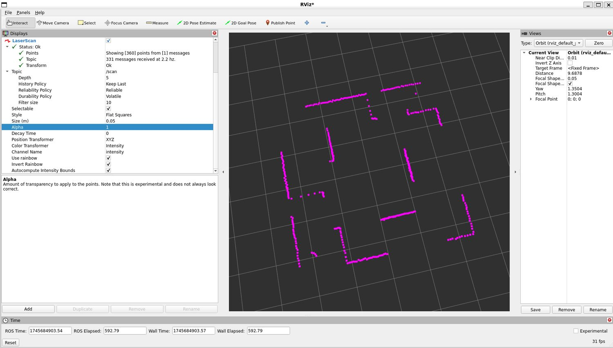

Shape
The useful reset.
The MSc gave me a structured way to revisit the maths, algorithms and research habits behind modern AI, after years of building production systems where reliability and judgement mattered every day.
MSc Artificial Intelligence / University of Leeds
A taught MSc portfolio: programming, data science, algorithms, machine learning, knowledge representation, AI ethics, deep learning, text analytics and robotics. The dissertation and CORL material are deliberately not included here.
I have not published Leeds teaching material or assignment briefs. These pages describe what I learned and show selected figures from my own assessments, notebooks and experiments.

Shape
The MSc gave me a structured way to revisit the maths, algorithms and research habits behind modern AI, after years of building production systems where reliability and judgement mattered every day.
Emphasis
The strongest through-line was learning to ask what the model is actually measuring, what the data represents, where the evaluation can lie, and what changes when the system leaves the notebook.
Range
The assessed work ranged from knowledge ontologies and AI ethics to orbital regression, image captioning, LLM summarisation proposals and reinforcement learning for simulated robots.
Result
The programme sharpened the research side without replacing the engineering side: clean data, reproducible experiments, pragmatic tooling, careful evaluation and a preference for systems that can actually be made to work.
Taught modules
OCOM5100M / Python / data pipelines
Project Gutenberg text processing, bulk data handling, letter statistics and a practical Python analysis pipeline.
OCOM5101M / classification / cost models
Fraud prediction, model comparison, preprocessing, balanced error rates and business-facing cost analysis.
OCOM5102M / theory
Proof techniques, complexity, graph thinking and the useful discomfort of being precise.
OCOM5200M / regression / Gaussian processes
Predicting Mars positions from JPL data using MLPs and Gaussian process regression.
OCOM5201M / ontology / reasoning
A sandwich ontology, description logic, OWL reasoning, Lean and Prolog. Yes, sandwichness is surprisingly hard.
OCOM5202M / AI ethics
Facial recognition, surveillance, copyright, generative AI and the practical politics of powerful systems.
OCOM5203M / PyTorch / vision-language
Image caption generation with ResNet encoders, sequence decoders, BLEU and cosine-similarity evaluation.
OCOM5204M / NLP / LLMs
A research proposal on persona variation in LLM-generated podcast-style summaries.
OCOM5205M / ROS / RL
ROS, Gazebo, TurtleBot, laser scans, reward design and reinforcement learning for navigation.
MLX course / GitHub projects
Six weeks of practical AI projects: vision transformers, captioning, audio, LoRA fine-tuning, embeddings and retrieval.